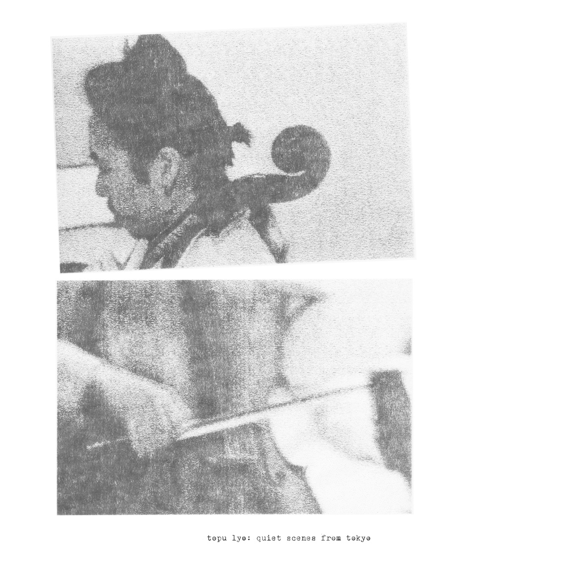
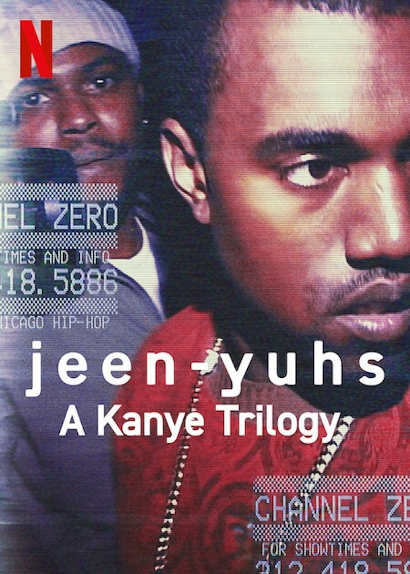
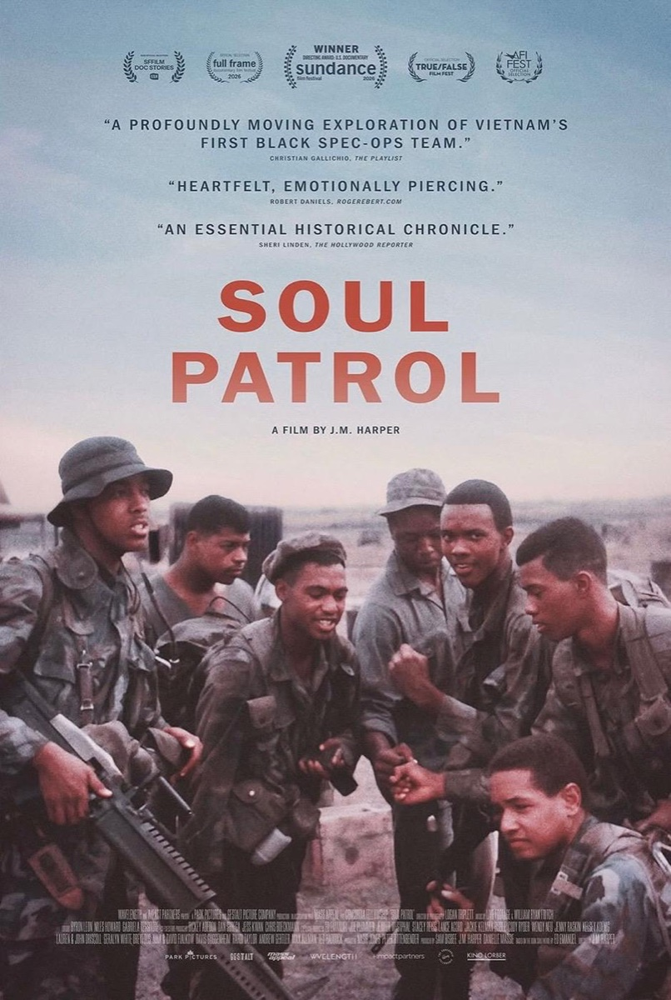
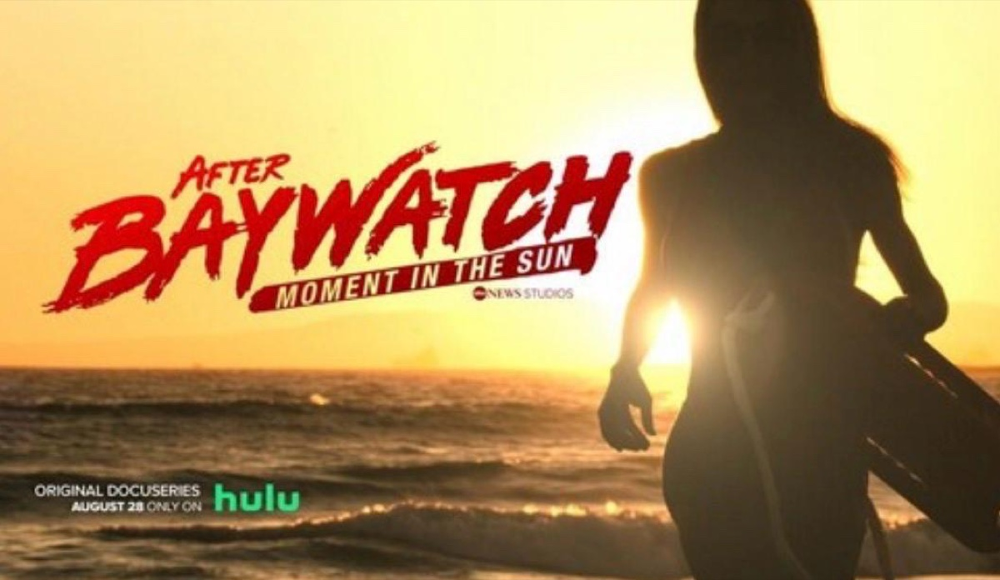
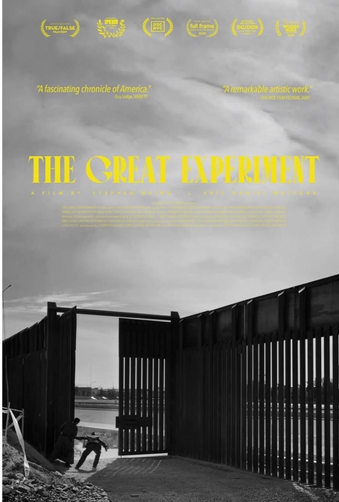
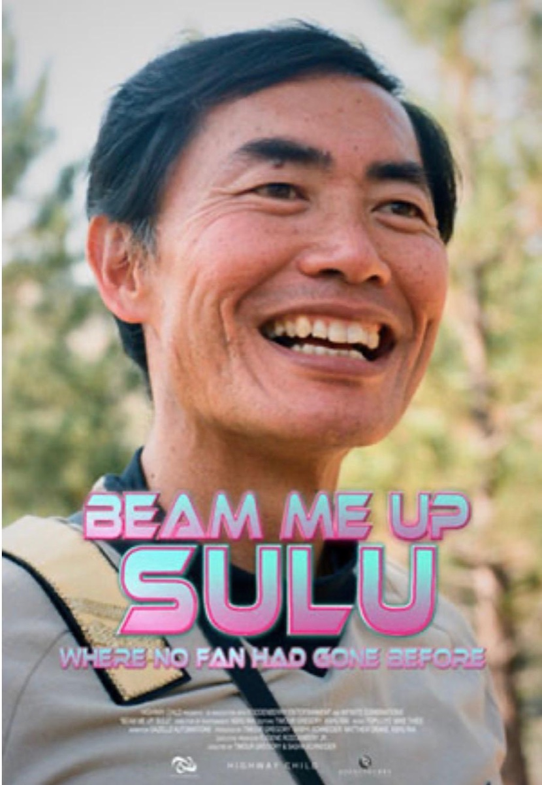
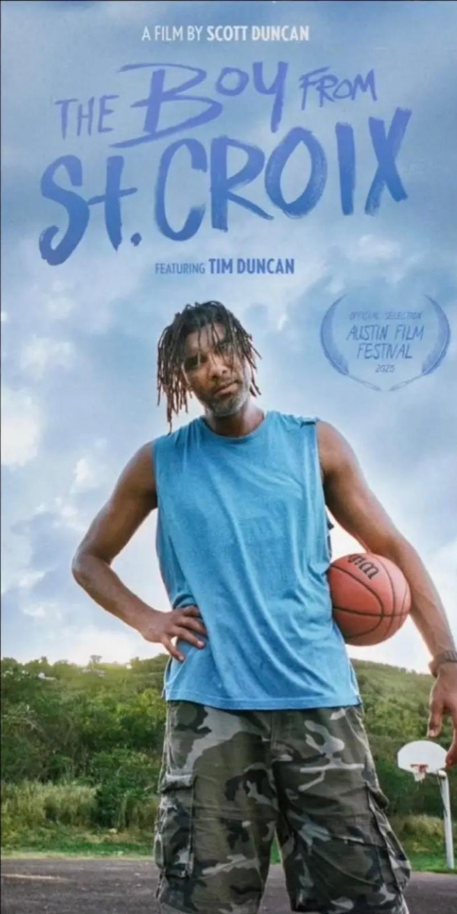

works
-
debut solo album on jan jelinek's faitiche label nov 6, 2026

-
Released on Futura Resistenza. A collaborative conversation between cello and piano, this project marked my first stint as a producer and mixer. Everything was recorded either on a Zoom recorder or using just two microphones, relying heavily on the natural room acoustics. Whenever a song felt like it was missing something, we ran it through the Roland RE-301 Chorus Echo to give it that extra touch of magic. You can clearly hear its distinct character on four specific tracks.
-
Right when COVID-19 hit, Mike and I were thrown a lifeline. Our longtime manager called us up and told us that Coodie and Chike wanted to get on a call with us. We had already collaborated with them on two previous projects, and working with them again—alongside Jason Harper, Max Allman, Byron Leon, and composer CTZN Chance—was an absolute dream. We created a musical score that beautifully contrasted Kanye's own music in the film, blending classical and modern elements. We also enlisted Danny Meyer to handle all the woodwinds, and he truly brought everything across the finish line.
 jeen-yuhs trailer
jeen-yuhs trailer

-
Mike and I sent Jason Harper our cello quartets, and he wrote back saying he might have a project for us. The timing worked out perfectly; I was in the middle of moving to Tokyo in 2025 and was working out of my small studio in Nishi-Azabu. Jason wanted a very organic sound using strictly acoustic instruments and absolutely no electronics. It was incredible to be reunited with him and Byron for such a truly amazing film.
 Soul Patrol – Official Teaser Trailer
Soul Patrol – Official Teaser Trailer

-
This was an incredibly fun project for Mike and me to dive into. Having worked with director Matt Felker years ago, he shared his new vision with us, which required us to expand our usual sonic palette. We pushed ourselves well out of our comfort zone to explore a much heavier rock sound, and I am incredibly proud of the final result.

-
Directed by Steve Maing and Eric Daniel Metzgar. We had talked about working with Steve for so many years, so we were thrilled to finally get the opportunity to contribute to his latest work. The Great Experiment enlists an all-star cast of composers, including Meredith Monk, Robert Aiki Aubrey Lowe, and a few others. It is an incredibly profound, thought-provoking film. Its vérité style shares similarities with jeen-yuhs, making it feel urgent and extremely timely.
 The Great Experiment | Official Trailer
The Great Experiment | Official Trailer

-
Timour Gregory and Live Footage are reunited once again! Years ago, we scored a UNICEF project that Timour directed. He is an amazing collaborator, and I have immense respect for his work. The film doesn't take itself too seriously because of its brilliant cast of characters, who maintain a perfect sense of levity throughout. It serves as a fantastic piece of social commentary.
 Beam Me Up, Sulu | Official Trailer
Beam Me Up, Sulu | Official Trailer

-
When we got the call from Scott Duncan that he was making this documentary, I was over the moon. I have always been a massive fan of the NBA, Tim Duncan, and those legendary San Antonio Spurs teams with Manu Ginóbili and Tony Parker. I love everything about "The Big Fundamental," and getting to learn more about Tim while seeing behind the scenes of this quiet killer was truly an honor.
